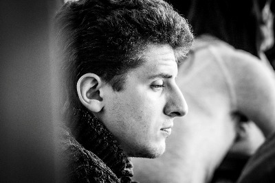

Азаров Павел Николаевич

E-mail: azarnoy@mail.ru
Тел.: +7-(4742)-90-83-88
Образование: высшее (учитель математики и физики)
Стаж работы (на ноябрь 2018г.):
общий — 7 лет 9 месяцев,
педагогический — 7 лет 9 месяцев
Заместитель директора по ВР. Закончил в 2011 году Липецкий педагогический университет,
факультет физико-математических компьютерных наук. С отличием защитил дипломный проект
«Формирование познавательного интереса обучающихся на уроках математики». В 2011 году
поступил в аспирантуру ЛГПУ по специальности «Педагогика обучения». Работает в рамках
направления обучения одаренных детей.
Курсы повышения квалификации
- 2012 г. — «Развитие профессиональной готовности учителя математики к дистанционному
обучению одаренных учащихся» (ФГАОУ ВПО «Национальный исследовательский университет
«Высшая школа экономики»)
- 2015 г. –«Психолого-педагогические аспекты профессиональной компетентности
педагогических работников в условиях реализации ФГОС» (ЧУ ДПО «ВГАППССС»)
Награды
- Победитель в номинации «Надежда» конкурса «Учитель года 2011» города Липецка.
- Награжден грамотами департамента образования г.Липецка:
- «за достигнутые успехи в формировании культурного и нравственного развития
личности учащихся» (2013г.),«за организацию и проведение в рамках
городского фестиваля педагогических идей и достижений системы
дополнительного образования детей мероприятия, направленного на развитие
интеллектуальных способностей детей» (2013г.).
- Абсолютный победитель городского конкурса профессионального мастерства педагогов
дополнительного образования «Сердце отдаю детям» (2014г.).
- Стал лауреатом областной премии педагогов дополнительного образования за победу в
областном публичном конкурсе «Сердце отдаю детям» (2014г.)
- Почетная грамота Управления образования и науки Липецкой области «за значительные
успехи в организации и совершенствовании работы по дополнительному образования
детей и подростков, формирование интеллектуального, культурного и нравственного
развития личности» (2014г.)
- Благодарственное письмо от департамента образования администрации города Липецка
«за помощь в организации интеллектуального турнира «Что? Где? Когда?» для
ассоциации молодых учителей» (2014г.)
- Благодарственное письмо от администрации города Липецка, Липецкого городского
совета депутатов «за активное участие в общественной жизни города Липецка и большой
вклад в реализацию муниципальной программы «Липецк – наш общий дом на 2014 – 2016
годы» в сфере работы с молодежью» (2015 г.)
Профессиональная переподготовка
- 2015 г. – «НОВПО «Липецкий эколого-гуманитарный институт» — «Менеджмент в
образовании»